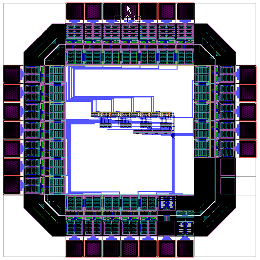

Robot testbench for software development
Senior design project. Working off an issue discovered on the UMD-Inteligent Systems
Club, my team found a way to help the ISC while also learning about Ubuntu, ROS, hardware drivers,
and the engineering design process.

Intelligent Systems Club Autonomous Snowplow
This is an autonomous snowplow which the ISC from Dearborn takes to competition each year.
We ran into some issues at the 2020 competition at Dunwoody in Minneapolis.
Seen above in its natural habitat.

Four-Bit ALU
Using the Tanner library to construct the static-resistant frame, I designed the chip which features a four-bit ALU with inputs and outputs.